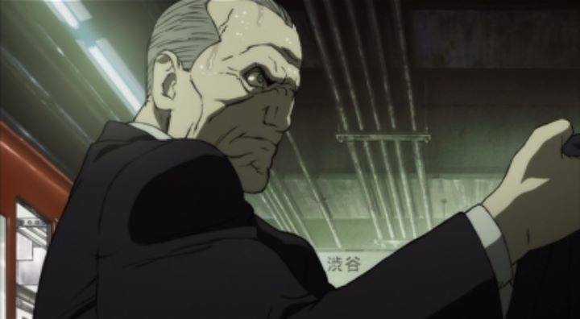

Around the early 2000's, the anime industry in the international world was gaining traction it had never seen before. Pokemon, Dragonball Z and other anime had penetrated the playgrounds of English children. Science fiction franchise "The Matrix" stated inspiration from Japanese anme in its action scenes. Quotes from notable Hollywood directors were slowly appearing, each praising Japanese animation. Those "Chinese cartoons" were still not mainstream, but audiences were curious.Having grown up around this time, I saw mature anime appearing on television and some interviews / documentaries trying to explain the history of it. Experts had a set of films or shows they would always fall back to as examples of anime as ambitious works of art. They would show scenes of "Akira"'s ride through the cityscape, "Ghost in the Shell"'s final action scenes, "Ninja Scroll"'s use of speed lines to give a sense of action, "Perfect Blue"'s surreal illusions, and "Vampire Hunter D: Bloodlust"'s gothic-inspired design. Notice that each of these are R-rated violence-heavy movies, the type that hardcore anime fans gravitated to, and that some of these films were recent in proportion to the time these interviews took place. Regardless, these were considered undisbutible classics in the field.Since then, the anime industry crashed when this hype died down in the late 2000's, then rised again in the mid 2010's due to strong storytelling and the advent of international web-streaming. Those classics of yesteryear are still talked about, but not as frequently. One such classic was "Blood: The Last Vampire," a ambitious action horror movie that stood as a pinacle of bloody vampire-horror. At least, so I heard. The film remains out of print as of 2017, after its release in 2000 from Manga Entertainment. Curiously, the film actually was released in the USA first before Japan, showing the amibition to reach new audiences, despite having given up today to showcase it. The "Blood" franchise also spawned a television show called "Blood+" (which also remains out of print), and the more recent "Blood-C" and "Blood-C - The Last Dark," which recall themes and scenes of the original film and series but with fresh eyes and new character designs from Clamp. But if I had to choose, I wanted to see the original film. And by chance, I found a used DVD copy for a good price at an anime convention. Score.Having finally seen this "classic," I can see why it isn't remembered and revisited today. It is certainly special, but flawed, and frankly not worth the tremendous effort to seek out. The DVD box proudly states the "Blood: The Last Vampire" is a new "standard of top quality in digital animation." The animation studio Production I.G. likely saw this as both a labor of love and an experiment to showcase the potential of digital cel animation. Prior to this film's release in 2000, anime was still commonly drawn on physical paper and cels. But "Blood" was made entirely on a computer screen, using computer equipment to digitally draw and paint the film. It was ahead of its time, and likely helped convince studios in Japan to switch to digital 2D animation in the years that followed (much to the annoyance of fans who today miss traditional cel-animation). But because this film is very much an experiement, it leaves the viewer wanting. The story is a short exerpt of the life of Saya, a true vampire hired by American agents to hunt down fake vampire demons hiding among humans. The 45 minute film (yes, it is quite short) takes place mainly at a high-school near a government base, where a few fake vampires are hiding among the students during the Halloween dance.The story and world does well to build a setting that I want to see more of and learn more about. But it doesn't satisfy the craving it gives me. I want to learn more about Saya: who is she? Why is she the last vampire? Why is she helping hunt down other demons? Why doesn't she attack other humans? And I want to know about said demons: who is making fake vampires? This isn't necessarily a writing or direction issue, both are actually quite competent. I think this feels like a double-long debut episode to a longer television show... except we only got the first episode. The aforementioned additions were spin-offs that pretended this original film didn't exist, which is a shame. The character designs are unique, emphasizing large lower lips and brooding eyes. It's appropriate for a gritty world, but there's one major problem: the characters look rough as if they were drawn in Microsoft Paint. It's a unique style, but I think it wasn't intended, and it can be distracting. Thankfully the animation is a bit better, subtle in quiet scenes and well-paced during action scenes, but even then is not quite as timeless as other films manage to be. It shows its age. Not to mention the use of CGI backgrounds, while great for camera movement, its clear that merging the two techniques wasn't perfected yet. Any enjoyment is reliant on those violent and gorey action scenes, which provide some, but limited, satisfaction.The one voice track is in multiple languages (English AND Japanese) to suit the background of the characters. It's clever, but if you plan to watch without subtitles (assuming it was a complete English dub), you'll be confused for about half of the movie. I'm impressed with the Japanese actor for Saya who was able to speak some lines in both English and Japanese. However, the delivery from all the characters, be it the American agents or the frightened school nurse, don't feel quite right, and if focusing too much on it, can be distracting. The music does its job to provide atmosphere appropriate for an action-horror.Occasionally, pilot episodes for proposed anime projects appear when the rest of the series is never realized. While fascinating, they aren't satisfying. For a film with this ambition, and with the talent on display, it's a shame that "Blood: The Last Vampire" gives a similar vibe. The director had stated that there was much more intended for the story, and the studio intended the rest to be told in novels and video games, which were made but never released outside of Japan. If there was an anime deserving and needing of a reboot, I would first propose "Blood: The Last Vampire" for a remake as a trilogy of films. But even then, there have been numerous Saya's already, a reboot would simply be another one. The story of the original film probably cannot be continued in any appropriate manner... any attempt would feel fake.
- "Ani" More reviews can be found at : https://2danicritic.github.io/ Previous review: review_Blood-C_-_The_Last_Dark Next review: review_Blood_Blockade_Battlefront